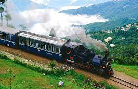
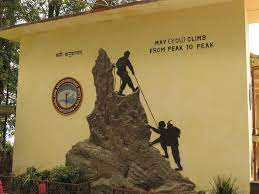
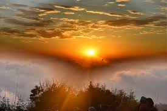
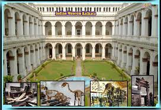
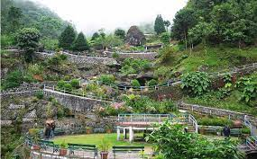
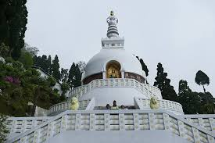
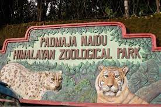
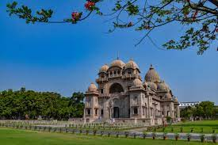

Darjeeling Himalayan Railway
The Darjeeling Himalayan Railway is fondly called as the “Toy Train”. This toy train ride of Darjeeling is also a UNESCO World Heritage Site and this popular ride connects Darjeeling with Siliguri. It is one of a kind experience and is one of the famous narrow 2 feet gauge trains. This amazing toy train runs between New Jalpaiguri and Darjeeling and it also passes through one of the highest stations in the world that is Ghum. This station is nestled at an altitude of 2258 meters and offers a spectacular aura filled with natural bliss.

Himalayan Mountaineering
The Himalayan Mountaineering Institute (HMI) is one of the premier mountaineering institutes in the world. Founded on November 4th, 1954 by none other than Pandit Jawaharlal Nehru, the first Prime Minister of India, to commemorate the first successful ascent of Mount Everest by late Tenzing Norgay Sherpa & Sir Edmund Hillary. Being the premier mountaineering institute of South-east Asia, HMI is also referred to as the Mecca of Indian Mountaineering. The Institute has an international reputation & has trained thousands of people from across the globe in mountaineering & allied adventure activities.

Tiger Hill,Darjeeling
The majestic view of the Kangchenjunga peaks and the warmth of the sunlight make Tiger Hill in Darjeeling a perfect holiday destination. Everest looks at you from far away and enhances the picturesque beauty of the location. At the highest point of Tiger Hill, the summit Ghoom awaits to introduce you to the beautiful views of Mt. Everest and Mt. Kangchenjunga. The snow-clad mountain looks exceptionally mesmerizing during the time of sunrise and should not be missed at all.

Indian Museum
This is not a museum, rather it is a place for ideas. Founded in 1814, by the Asiatic Society of Bengal, Indian Museum is the largest and oldest museum in India. Here one can find various historical items like collections of armors, antiques, skeletons, ornaments, fossils, mummies, and whatnot! Currently, the Indian Museum in West Bengal has 35 galleries that have been further divided into six different categories - Art, Archaeology, Anthropology, Geology, Zoology, and Economic Botany. There is also a library within the museum premises for those who want to have a taste of our fascinating history.
The museum is open from Tuesday to Friday from 10 am-6:30 pm. And on Saturdays and Sundays, it is open from 10 am-8 pm. For foreign nationals, the price of the entry ticket is Rs.500 and for the locals, it is Rs.50
Siliguri Hong Kong Market
The status of Siliguri as a great travel destination wrests not only because it is a stopover for the hill stations, but for its intrinsic charms including shopping centres and consumer markets. Reputed as a shopper’s paradise, Siliguri has numerous markets and streets selling imported merchandise. Sevoke Road and Hill Cart Road are the predominant centres for Siliguri shopping, the former offering an international experience in upscale shopping malls and the latter for its street markets displaying numerous merchandise including handicrafts of choice.
The Siliguri Hong Kong Market is open on all days of the week from 9.00 A.M to 9.00 P.M including public holidays.

Rock Garden,Darjeeling
It's main initiator was Mr. Subhash Ghaising, who was the G.N.L.F chief supremo. His initiative cut stones of different levels throughout the garden and arranged terraced seating, which became popularly known as the Rock Garden. This popularity is attracting tourists from outside the city. Visitors are further encouraged to travel to the hill town. Rock Garden Darjeeling is a waterfall & garden located on a hill. The main attractions here are the Chunnu Summer Falls, the green tea gardens around the hills and the various flowering trees. The scenery and waterfalls of this garden have attracted tourists from all over the world. Just 3 kilometers below this rock garden is another exciting travel destination, whose name is Ganga Maya Park. Another name for the Rock Garden is the Barbotey Rock Garden.

Peace Pagoda
Darjeeling Peace Pagoda is one of the Peace Pagodas designed to provide a focus for people of all races and creeds to help unite them in their search for world peace. It is located in the town of Darjeeling in the Indian state of West Bengal. Like most of the other Peace Pagodas, it was built under the guidance of Nichidatsu Fujii (1885–1985), a Buddhist monk from Japan and founder of the Nipponzan-Myōhōji Buddhist Order.
The foundation stone of the pagoda was laid on 3 November 1972 by Nichidatsu Fujii, and was inaugurated on 1 November 1992. The pagoda was designed by M. Ohka, and it took 36 months for constructing it. It houses the four avatars of Buddha including Maitreya Buddha. The height of the pagoda is 28.5 metres (94 ft) and diameter is 23 metres (75 ft).The Pagoda is situated on the slopes of the Jalapahar hills of Darjeeling, a few kilometres from the town of Darjeeling.

Zoological Park
The Darjeeling Zoo, also called as Padmaja Naidu Himalayan Zoological Park. The zoo was formerly known as Himalayan Zoological Park and was established on 14th August, 1958 as a joint venture of Govt. of India (Department of Science and Technology) and Govt. of West Bengal (Department of Education). In the year 1975, Late Smt. Indira Gandhi the then Prime Minister of India dedicated the Himalayan Zoological Park to Late Smt. Padmaja Naidu, ex-governor of West Bengal. Hence, the zoo was re-named as Padmaja Naidu Himalayan Zoological Park.
Darjeeling Zoo is the only specialised zoo in India which is internationally recognized for its conservation breeding programmes of Red Panda, Himalayan Newt, Snow Leopards, Tibetan Wolf and other highly endangered animal species of Eastern Himalaya. One can see here animals like Indian Tiger, Snow Leopard, Black Leopard, Clouded Leopard, Tibetan Wolf, Asiatic Black Bear, Red Panda, Blue Sheep, Yak, Musk Deer, Barking Deer and Jackal. The zoo also houses various species of birds such as Kalij Pheasant, Golden Pheasant, Ring Necked Pheasant, Red Jungle Fowl, Rose-Ringed Parakeet etc.

Belur Math
Belur Math or Belur Muth is the headquarters of the Ramakrishna Math and Mission, founded by Swami Vivekananda, a chief disciple of Ramakrishna Paramahamsa. It is located on the west bank of Hooghly River, Belur, West Bengal. It is a place of pilgrimage for people from all over the world professing different religious faiths. Even people not interested in religion come here for the peace it exudes. The serene campus of belur math on the Ganga includes temples dedicated to Sri Ramakrishna, Sri Sarada Devi and Swami Vivekananda, in which their relics are enshrined, and the main monastery of the Ramakrishna order. The place has been sanctified by the stay of Swami Vivekananda and most of the monastic disciples of Sri Ramakrishna who spent several years here. Holy Mother Sri Sarada Devi also visited this place on several occasions. The room in which Swamiji attained Mahasamadhi has been preserved here. The headquarters of the worldwide twin organizations known as Ramakrishna Math and Ramakrishna Mission are also situated here.